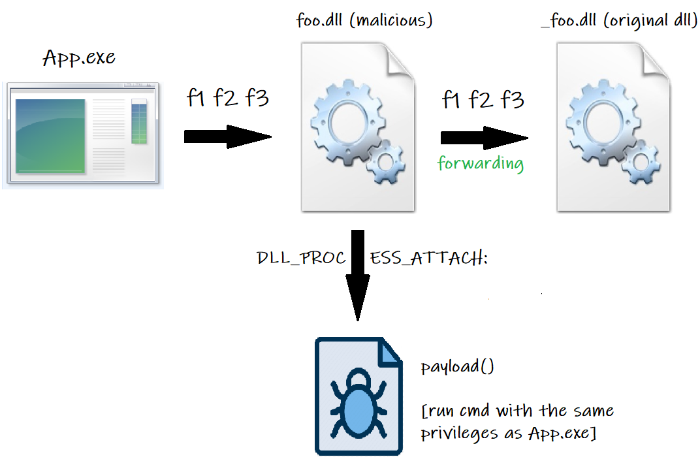

DLL Hijacking using DLL Proxying technique
What is a Dynamic-Link Library (DLL) and why is it used?
A DLL is a library that contains code and data that can be used by more than one program at the same time. By using a DLL, a program can be modularized into separate components and, since the modules are separated, the load time of the program is faster.
A module is only loaded when that functionality contained in it is requested and updates are easier to apply to each module without affecting other parts of the program.
So, we can imagine having the main program where only some basic features are implemented and the remaining are implemented in one (or more) DLL(s), that will be loaded at runtime only if the program will need to use one (or more) of the functions contained in it (them).
As you can see there are several advantages that are provided when a program uses a DLL (e.g. uses fewer resources, promotes modular architecture, eases deployment and installation, and so on...).
You can read this article for more information on DLLs and their advantages.
What is DLL Hijacking?
It consists in the replacement of the dll used by a certain application with another dll.
And why should we do this replacement?? 🤔
There can be more reasons why we should do it, one of them is to allow us to execute arbitrary code within the application (let's call it app.exe) that loads the DLL (let's call it foo.dll).
For example, suppose you have to log into a PC where your only choice is to login as StandardUser (so you don't have any privileges); you could use the dll replacement to make app.exe execute a shell with the same application privileges.
Clearly, if app.exe is running with standard user privileges, it would be useless but, if it had administrator or SYSTEM privileges (you can read this article for more information on Windows Security Identifiers), then the shell would run with the same privileges and, therefore, we would have full control of the system. We would get what, more formally, is called "Local Privilege Escalation" (LPE) or "Elevation Of Privilege" (EOP).
Let's call App.exe the application that could use the DLL foo.dll then, the following steps take place:
- We compile a malicious dll that, once loaded into memory, executes the code (payload) that allows us to run a shell (you can see the dll code in the image below and download it from my GitHub repository).
- Let's call the malicious dll foo.dll, and replace it with the original one.
- Run (or wait for it to run) App.exe
- Now two things can happen:
- To start properly, App.exe needs foo.dll and, consequently, loads it immediately into memory.
- App.exe doesn't need to load foo.dll immediately but, during its execution, it must perform a task that, to be performed, requires the call of a function contained in the DLL and then loads it into memory.
- foo.dll is loaded into memory and ... Our payload won't necessarily run; it probably won't run. 😑
- Our payload will be executed (lucky chance) 😎
- Our payload won't be executed (more likely case) 😭
Let's analyze point 5 in more detail.
If App.exe requires foo.dll, it means that it needs to use some of its functions to perform some particular task. Since foo.dll (the original one) has been replaced by us with the malicious one and, since the malicious dll we've created doesn't implement any function of the original dll, App.exe won't be able to perform its task. If we are lucky, this will not lead to the application crash and our payload could be executed (case 5.1).
In the more probable case instead, the lack of access to the dll required function, will lead App.exe to crash, or foo.dll will not be loaded into memory as it doesn't contain the necessary code that App.exe is looking for. In any case our payload will not be executed (case 5.2).
Ok... So, what can we do to be sure that, in any case, the dll will be successfully loaded into memory and our payload will be executed? 🤔
There are several ways to achieve this result; one of these, for example, is re-implementing all the original dll exported functions in our malicious dll. In this way, also our dll will export all the functions that the application might need, and this will allow both our malicious dll to be loaded into memory, and to prevent App.exe from crashing.
The problem is that we often do not have the original dll source code so, to achieve our goal, we would have to decompile the original dll and understand exactly what each function does in order to be able to implement them in our malicious dll. This is definitely time consuming and, if there are a lot of functions, it would be crazy! 😵
Luckily, there are other quicker ways to solve the problem and one of them is the dll proxying technique. 🎉
Before going on, analyzing the dll proxying technique, I want to quickly deepen the malicious dll code reported in the image above. I think that the payload function doesn't need many explanations in fact, once called, through the CreateProcess function (provided by the processthreadsapi library), it starts the Windows command prompt (cmd.exe). You can read this article for more information on CreateProcess function.
More interesting, however, is the DllMain entry point. It contains a DWORD variable (fdwReason) that specifies the reason for calling function and, that reason, can be one of the following 4:
- DLL_PROCESS_ATTACH: Initialize once for each new process. Return FALSE to fail DLL load.
- DLL_THREAD_ATTACH: Do thread-specific initialization.
- DLL_THREAD_DETACH: Do thread-specific cleanup.
- DLL_PROCESS_DETACH: Perform any necessary cleanup.
We have to be careful where we write the call to the payload function. Our goal is to run the payload as soon as our malicious dll is loaded into memory, so we have to wait for the DLL_PROCESS_ATTACH event, which is invoked when the process, that needs the dll to start properly (or to perform a particular task), is executed.
Writing the call to the payload function when the DLL_THREAD_ATTACH event occurs, could generate some problems or loops of various kinds. In fact, this event is raised every time a thread is initialized and makes use of the library; since the threads could be numerous, our payload could be called multiple times, but we want it to run only once. You can read this article for more information on DllMain entry point.
What is DLL Proxying technique and how it works?
We can compare the dll proxying technique with the task performed by a traditional proxy server considering, in this case, the proxy server as our malicious dll. The idea behind this technique is to allow the malicious dll to forward all App.exe calls to a particular function, to the original dll.
In this way the malicious dll doesn't need to implement any function exported by the original dll because, if a generic function is called, the malicious dll will forward this request to the original one, which can provide it without problems because it implements the required function.
Referring to the example in the previous paragraph, let's assume that App.exe needs to use a function exported by foo.dll. Rename foo.dll to _foo.dll and copy the malicious dll (which we must call foo.dll) into the folder where _foo.dll is located. Now the following steps take place:
- The user wants to run App.exe
- App.exe, to get going properly, requires some functions (let's call them f1, f2 and f3) contained in the original dll.
- foo.dll (our malicious dll) is loaded into memory (because App.exe doesn't know that the original dll was renamed to _foo.dll).
- foo.dll doesn't implement f1, f2 and f3, so it forwards the function calls to _foo.dll (the original dll).
- _foo.dll implements f1, f2 and f3 and provides them to App.exe
- App.exe runs f1, f2 and f3 and starts successfully.
The concept is represented by the following image:

We are particularly interested in point 3 because, during its execution, foo.dll (our malicious dll) is loaded into memory and our payload is executed! The possibility to forward to the original dll (_foo.dll) all the requests made by App.exe, allows the appropriate malicious dll loading into memory and avoids the application (App.exe) crash.
In this way we have finally solved the problem discussed in the previous paragraph. 🥳🎉
DLL functions finding and forwarding
Perfect but ... How can we know what are the functions contained in the original dll (currently renamed to _foo.dll)? And, most importantly, how can we forward our malicious dll (foo.dll) function calls towards the original one? 🤔
Let's start by solving the first problem (find out what are the functions contained in the original dll). To do this we can use DLL Export Viewer, a tool that has been developed for this purpose. Once downloaded and installed, follow the steps below:
- Check the radio button "Load functions from the DLL files specified in the following text file".
- Browsing the file system, choose the original dll you are interested in.
- Check "Scan exported functions" and the last two checkboxes.
- Press ok button and you should see a screen like the one shown in the image below.
In the case of the example shown in the image above, we can see that the dll (which in this case is AppxProvider.dll) functions are only five, and their names are reported in the first column of the second window.
Let's now move to the 2nd problem: how can we forward our malicious dll function calls towards the original one? 🤔
We can do this by providing the appropriate directives during the linking phase of our malicious dll.
On various websites I have seen that Visual Studio was used to create the malicious dll (in my case I tried with Visual Studio 2019) and, to provide directives to the linker, the pragma command was used.
The directives provided via the pragma command have the following format:
#pragma comment (linker,"/export:FunctionName=originalDll.FunctionName, @Ordinal")
The image below shows how the code for the AppxProvider dll (shown in the previous image) looks like (AppxProvider is the name of the malicious dll, _AppxProvider is the original dll (renamed) and Ordinal is referred to the fourth column of the previous image).
To successfully compile the dll and to make sure that the linker executes the directives, VisualStudio must be configured appropriately, otherwise the function calls forwarding will not work. These configurations must take into account various aspects, as the type of project used to create the dll, the runtime library to use, the architecture of the executable that calls the functions, the type of library that we want to create and so on...
Unfortunately, I've had some trouble setting up Visual Studio correctly, although I followed all the instructions that were indicated on the different websites I consulted. Continuing to read I found out that other people had the same type of problem and, to get over this truble, I decided not to use the default Visual Studio compiler. 😠
I decided to use the GCC compiler on Windows 10 and, to do so, I used Mingw-w64 (an advancement of the original mingw project). Also, I decided not to write the linker directives directly into the malicious dll code, but in a Module-Definition file (.def file), which is fortunately supported by the Mingw-w64 cross-compiler toolset.
In this case, all we have to do is to write in the .def file the list of all the functions we want to forward to the original dll, and remember to set in GCC this file when compiling the dll.
The image below shows the example of the .def file for the five AppxProvider dll functions (AppxProvider is the malicious dll, _AppxProvider is the original dll and the number following the @ is the ordinal I talked about in the previous paragraphs).

Very well! We just have to compile our malicious dll.
To compile it, after installing and adding Mingw-w64 to the Windows Environment Variables (here you can find a tutorial on how to do it), we just have to browse (using Windows CMD) the folder containing the .cpp file (in which we wrote the malicious dll code) and the .def file, and compile the malicious dll using the following command (you can find the description of each parameter below):
gcc -shared -o AppxProvider.dll evildll.cpp functions.def -s
- -shared indicates that we want to compile a shared library (not static).
- -o specify the output file name for the executable.
- AppxProvider is the name we want to give to our malicious dll.
- evildll.cpp is the .cpp file in which we wrote the malicious dll code.
- functions.def is the .def file containing the list of the functions we want to forward to the original dll.
- -s produce the assembly code.
If everything went well, in the folder you should find your malicious dll (image below). Now you just have to browse the folder where the original AppxProvider.dll is located, rename it to "_AppxProvider.dll" and copy your malicious dll (AppxProvider.dll). Finally, run the application that uses AppxProvider.dll and check if the payload is successfully executed.
Automatic generation of the .def file
If the functions to forward are only a few, as in the previous case, we can simply write them manually in the .def file, but what if the original dll contains several hundred of functions? 🤔 I don't think you will be so happy to spend hours compiling the .def file; for this reason I wrote my own script in Python (you can find here the code), taking a cue from that written in this article by itm4n, which takes care of doing this for us.
I named my script HTML2DEF.py and, as you may have guessed from the name, it automatically generates the .def file starting from html report generated by DLL Export Viewer (which I talked about in the previous paragraphs).
The image below shows how to generate the report.
Pay attention!! ⚠️
Don't save the report directly from the browser on your PC; this could generate a badly formatted html file, that could be different from the format used by DLL Export Viewer, and would probably prevent the script from working properly. Use the html report that is automatically saved by DLL Export Viewer in the folder where you've installed it (in my case: C:/Program Files/DLL Export Viewer/x64/report.html).
To generate this html file, DLL Export Viewer must be executed with administrator privileges, and if you want to find the report in the folder which I indicated earlier, you mustn't close DLL Export Viewer before taking the file (its closing implies the automatic deletion of the html report from the folder).
To make sure that everything's okay, you can compare the html source code with the one shown in the image below.
Ok, once the html report is saved in a folder, copy my script into the same folder and run it (of course you need Python on your pc to make it work).
The script will ask you two parameters (the name of the original dll to hijack (without extension) and the name of the html file exported from DLL Export Viewer (with extension)); if everything's okay, in the folder you should find the .def file.
In the image below you can see the execution of my script and the .def file generation.
As you can see my script assumes that you will rename the original dll with an underscore as the first character and, consequently, will forward all the dll function calls to the dll which has the name of the original one, preceded by underscore. So you have to rename the original dll in this way or, if you prefer to rename it differently, you must modify my script too. ⚠️
Ok, that's all, it only remains to put into practice all the concepts seen so far!
A practical example: hijacking zlib.dll used by BooktabZ
BooktabZ is the application used by Zanichelli to allow the reading of most of its ebooks. It works on Windows, Mac and Linux (I used BooktabZ version 4.8.7441713 for this test).
Once installed, browsing the installation folder, you can see many files, including various dlls. Among the many I chose zlib.dll because it is a dll needed for BooktabZ.exe execution.
How do I know? Simple... Just rename it with any other name and try to run BooktabZ.exe; an error message will appear (shown in the image below), due to the missing dll, and the application will not be executed.
But what if we choose a dll that isn't needed to start the application? 🤔
All the dlls that aren't loaded into memory while the application is running could be loaded at a later time, when the application will need to perform a particular task that, in order to be executed, needs to call a particular dll function.
For example, in the case of BooktabZ, we can assume that download.dll (just to give an example) is only loaded when the user, through the application, tries to download a new ebook. In this case, if we decide to hijack download.dll, we must also worry about triggering it and, to do that, we must somehow induce the application to download an ebook. ⚠️
So, for simplicity, I decided to hijack zlib.dll, so that we can see the hijack effect (the payload execution) as soon as BooktabZ.exe will be executed.
Well, now that we have chosen the target dll to hijack, we need to see what functions it contains and, to do that, we use DLL Export Viewer (as I showed in the previous paragraphs). The result is represented in the image below.
As we can see the zlib.dll functions are ONLY 76... Much more than those of AppxProvider.dll. 😒
This is not a problem since we can use the python script HTML2DEF.py to easily write (in the right format) all the functions to the .def file. Then let's proceed by making DLL Export Viewer generate the report.html file; now we can use HTML2DEF.py to obtain the .def file. 👌
The above steps are represented in the image below.
Now, using the same malicious dll code (written in the .cpp file) I showed in the previous paragraphs, and the .def file obtained from the previous step, we can generate our malicious dll using gcc. You can see the results in the image below.
Finally, by following the steps below, we should be able to see our payload running (the execution of Windows Command Prompt (CMD), with the privileges of the application that executed it (BooktabZ.exe)).
- Rename the original dll (zlib.dll) to _zlib.dll
- Copy the malicious dll (zlib.dll we've just compiled with gcc) to the same folder where _zlib.dll is located.
- Run BooktabZ.exe
- Hope that a shell will appear!! 😶🙏
You can download evildll.cpp, function.def, zlib.dll, report.html and HTML2DEF.py from my GitHub repository. Below my POC.
Conclusion
DLL Hijacking technique is just one of the possible techniques that can be used to exploit a vulnerability which can lead to a privilege escalation.
Hunting for this type of vulnerability in Windows 10, for the Microsoft Bug Bounty Program, I had some difficulty applying this technique, so I decided to write this article to help those who, like me, are in the same situation. 🆘
In this case I've just showed how to use this technique together with the dll proxying on an application (BooktabZ) not vulnerable. The ultimate goal is to find an application running with administrator (or SYSTEM) privileges and replace, despite being a standard user, one of its dlls with our malicious dll. Loading it into memory would guarantee us the execution of the Windows Command Prompt with administrator privileges (or SYSTEM), giving us full control of the system. 🎉
I hope you found the article clear, useful and interesting; leave a comment here if you have any questions or reports.
I want to thank in particular the following people who, through their articles, have helped me to understand and solve various issues related to DLL Hijacking, DLL Proxying and privileged file operation abuse on Windows:
- itm4n for his detailed articles and Python script.
- an0n for showing Mingw-w64 as a valid alternative to Visual Studio in one of his article.
- clavoillotte for this amazing article that started it all.